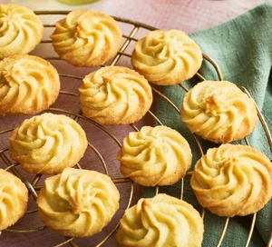

Butter Cookie

Description
These easy butter cookies will melt in your mouth – they're deliciously soft and crumbly.
Make and give these as a homemade edible gift.
Ingredients
- 2 ¼ cups all-purpose flour
- ¼ teaspoon salt
- ¼ teaspoon ground cinnamon
- 1 cup butter
- 1 (3 ounce) package cream cheese, softened
- 1 cup white sugar
- 1 egg yolk
- 1 teaspoon vanilla extract
- 1 teaspoon orange zest
Steps
- Preheat oven to 350 degrees F (175 degrees C).
- Sift together the flour, salt, and cinnamon; set aside.
- In a medium bowl, cream together butter and cream cheese.
- Add sugar and egg yolk; beat until light and fluffy. Stir in the vanilla and orange zest. Gradually blend in the dry ingredients.
- Fill a cookie press or pastry bag with dough, and form cookies on an ungreased cookie sheet.
- Bake for 12 to 15 minutes in the preheated oven, or until the cookies are golden.